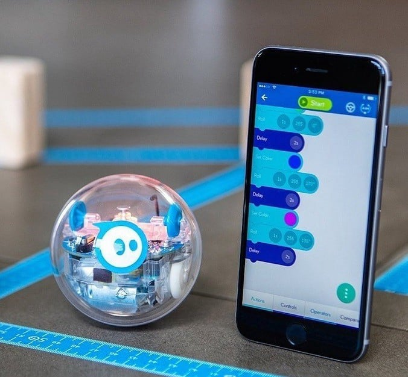
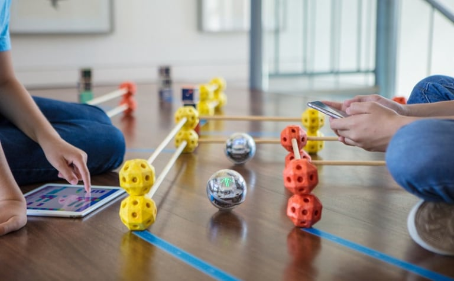
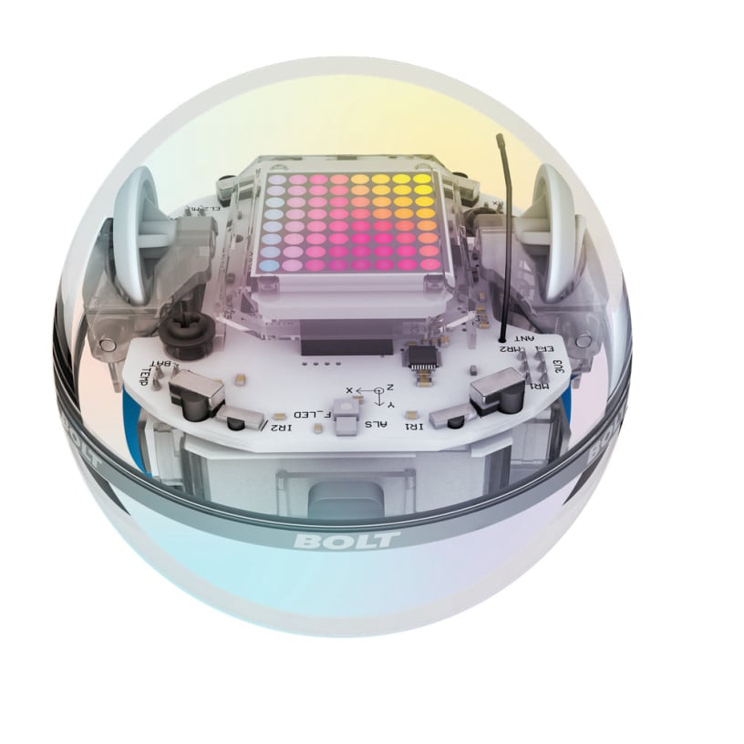
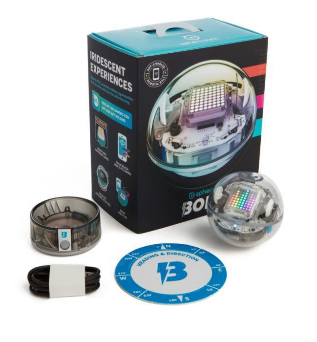

Programozás alapjai
Scratch vagy JavaScript blokkokkal tanítja a logikai gondolkodást.
Programozott mozgások, fényjelzések, LED mátrix használata.

Interaktív játékok és tanulási feladatok
Versenyek, pontgyűjtő feladatok, akadálypályák.
Kreatív feladatok: fények kombinálása, érzékelők használata játék közben.

STEM és érzékelőprojektek
Gyorsulásmérő és giroszkóp adatok elemzése.
Adatgyűjtés és döntéshozatal a robot viselkedésében (pl. vonalkövető vagy távolságérzékelő).

Csapatmunka és versenyfelkészítés
Több robot koordinációja csapatprojektekben.
Kreatív kihívások: célkeresés, akadálykerülés, pontgyűjtés.

Hobbi és kreatív fejlesztés
Saját játékok, kísérleti mozgások és LED animációk készítése.
Hardverbővítés: Bluetooth kapcsolattal több BOLT robot szinkronizálása.